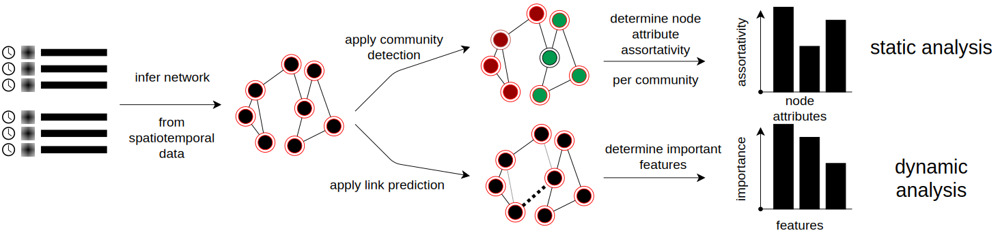
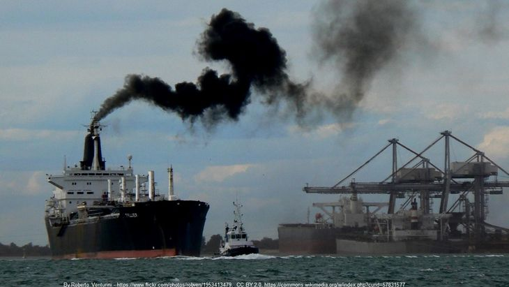

European Sailing Network
July 2020
Nathlie van Veen finished her MSc thesis at the Human Environment and Transport Inspectorate. In her work, she uses tools from the network science domain to get a better understanding of movements of large ships in Europe. She presented her work very well both for an academic public as well for inspectors at the Human Environment and Transport Inspectorate.
Understanding Dynamics of Truck Co-Driving Networks
December 2019
At the Complex Networks 2019 conference, I will present a link prediction approach to understanding dynamics in truck co-driving networks.
 gerritjandebruin/truck-codriving
gerritjandebruin/truck-codriving
Detection of Suspicious Behaviour from Ship Transponder Data
July 2019
Michael Bosch performed his bachelor research project on detecting suspicious behaviour from AIS data. He constructed several machine learning models to predict from a given ship trajectory what kind of vessel is observed.
Understanding Behavioral Patterns in Truck Co-Driving Networks
December 2018
At the 7th international conference on Complex Networks and their applications I presented about my on-going research on understanding of human behavior in the context of infrastructure networks.
cloud_downloadDownload presentation open_in_newProceedings
Data-Driven Risk Assessment in Infrastructure Networks
November 2017

The next four years Leiden University and the Ministry of Infrastructure and Waterstate collaborate to investigate the use of data science. The funding of my PhD-scholarship is part of this project. I will mainly focus on applying network science to get a better understanding of behavior of companies under investigation.
open_in_newRead more about the project.
Efficient Compliance Monitoring on Sulphur Dioxide Emissions of Ships
January - October 2017
When I planned to do my master thesis for the master Analytical Chemistry, I looked for projects in the public domain with a focus on data acquisition and processing. At that time the Human Environment and Transport Inspectorate used a so-called sniffer instrument from TNO. The main function of this sniffer is to see whether ships were sailing on non-compliant fuel in the Port of Rotterdam.
The objective of my research was to compare different techniques which are available for analysis of ship plumes. The first part of the thesis contains a literature review for instruments able to measure sulphur dioxide emissions. In the second part I perform analysis on data obtained from several European agencies. It is the first time (to my knowledge) that multiple instruments were compared on such a large dataset (more than 8000 measurements).
cloud_downloadDownload thesis cloud_downloadDownload presentation